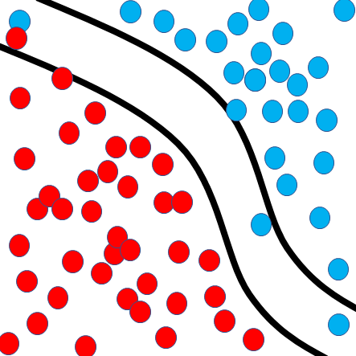

Deep Learning
Designing Neural Network Architectures from scratch.
Select an item from the menu on the left to learn more about it.
Designing Neural Network Architectures from scratch.
Select an item from the menu on the left to learn more about it.